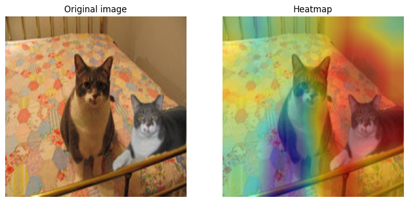
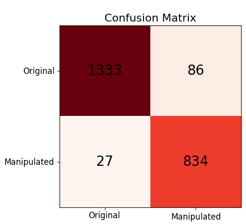
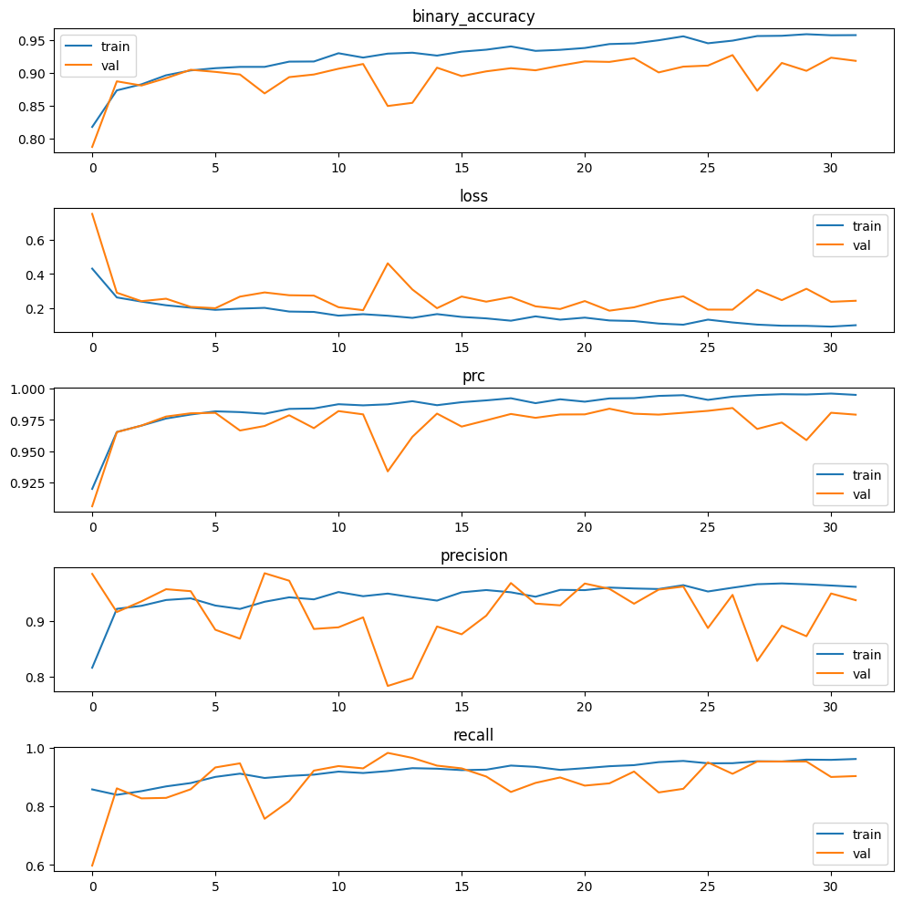

This project aims to develop a deep learning model that can detect modified images and distinguish them from original images.
This repository showcases the work and results of implementing a deep learning model using TensorFlow. The primary objective of this project is to detect whether an image has been modified, either by software or by an AI, with the aim of combating the spread of fake news. By leveraging advanced techniques in deep learning, the model is trained to analyze image features and accurately classify images as either authentic or modified. The repository provides a comprehensive overview of the model architecture, training process, evaluation metrics, and the implementation code. The ultimate goal is to contribute to the development of tools that can aid in verifying the authenticity of images, thereby helping to mitigate the impact of fake news in various domains.
If you would like to delve deeper into the details of this project, you can refer to the accompanying paper, which can be accessed at the following link: Paper. The paper provides comprehensive information about the methodology, experimental setup, results, and analysis, offering a more in-depth understanding of the project's contributions and findings.
The dataset used in this project is the Casia dataset, which contains 12,614 images. The images are divided into two folders: Au (original images) and Tp (modified images).
Alternatively, you can download it from here where you will have the exact same dataset as the one used in this project, with some minor modifications.
The dataset includes different categories of images, such as:
├── dataset │ ├── Au │ │ ├── Au_ani_00001.jpg │ │ ├── Au_ani_00002.jpg │ │ ├── ... │ ├── Tp │ │ ├── Tp_D_CND_M_N_ani00018_sec00096_00138.jpg │ │ ├── Tp_D_CND_M_N_art00076_art00077_10289.jpg │ │ ├── ...
To create the dataset with tampered images, it is important to note that we have two subcategories within the main categories:
This is because images can be modified in two ways:
Various experiments have been conducted with different architectures and image preprocessing techniques. The first part of the text represents the architecture used, while the last part represents the image preprocessing technique. E stands for Error Level Analysis, W stands for Wavelet, and YUV stands for utilizing the YUV color space.
| Modelo | Épocas | Tiempo por Época | Accuracy | Loss | Precisión | Recall | AUC | PRC | F1-Score |
|---|---|---|---|---|---|---|---|---|---|
| ENB1_v2_E | 13 | 99s | 0.93 | 0.21 | 0.95 | 0.94 | 0.98 | 0.98 | 0.93 |
| ENB3_E | 14 | 126s | 0.92 | 0.20 | 0.95 | 0.90 | 0.98 | 0.98 | 0.92 |
| XC_E | 12 | 147s | 0.90 | 0.55 | 0.90 | 0.93 | 0.93 | 0.94 | 0.92 |
| MN_E | 12 | 64s | 0.91 | 0.22 | 0.99 | 0.84 | 0.98 | 0.99 | 0.91 |
| MN_YUV | 33 | 45s | 0.92 | 0.23 | 0.90 | 0.92 | 0.97 | 0.97 | 0.91 |
| ENVB2_E | 31 | 104s | 0.89 | 0.30 | 0.84 | 0.98 | 0.97 | 0.97 | 0.91 |
| ENB1_E | 31 | 100s | 0.89 | 0.31 | 0.85 | 0.84 | 0.97 | 0.97 | 0.90 |
| XC_YUV | 20 | 130s | 0.82 | 0.83 | 0.78 | 0.98 | 0.91 | 0.90 | 0.87 |
| V16_E | 15 | 25s | 0.87 | 0.38 | 0.80 | 0.86 | 0.93 | 0.87 | 0.83 |
| ENV2B1_E | 29 | 60s | 0.78 | 0.68 | 0.71 | 1 | 0.95 | 0.94 | 0.83 |
| ENB1_YUV | 18 | 104s | 0.63 | 0.69 | 0.62 | 1 | 0.49 | 0.58 | 0.77 |
| R50_E | 7 | 32s | 0.83 | 0.46 | 0.81 | 0.72 | 0.93 | 0.88 | 0.76 |
| XC_W | 11 | 158s | 0.62 | 0.61 | 0.62 | 1 | 0.50 | 0.62 | 0.76 |
| V16_W | 20 | 108s | 0.62 | 0.67 | 0.62 | 1 | 0.50 | 0.62 | 0.76 |
| ENB1_W | 16 | 125s | 0.61 | 0.67 | 0.91 | 1 | 0.49 | 0.60 | 0.76 |
| V16_YUV | 14 | 89s | 0.63 | 0.65 | 0.65 | 0.90 | 0.61 | 0.70 | 0.75 |
| Scrath_W | 15 | 42s | 0.60 | 0.68 | 0.56 | 1 | 0.50 | 0.60 | 0.75 |
| MN_W | 20 | 67s | 0.60 | 0.68 | 0.60 | 1 | 0.50 | 0.60 | 0.75 |
| R50_W | 14 | 90s | 0.60 | 0.68 | 0.60 | 1 | 0.50 | 0.60 | 0.75 |
| Scrath_E | 12 | 36s | 0.60 | 0.69 | 0.57 | 1 | 0.49 | 0.60 | 0.74 |
If you want test the others models you can download the models here
Visual results have been obtained to provide a visual representation of the potential modifications made. The best result is showcased, highlighting the specific modification that has been implemented. These visual results serve as a demonstration of how the modifications impact the overall output.
The confusion matrix will be presented to further analyze and understand the test results. The confusion matrix provides a detailed breakdown of the model's predictions, showing the number of true positive, true negative, false positive, and false negative instances. It offers valuable information on the model's performance, allowing for a deeper understanding of its accuracy and potential areas of improvement.
The model training process was completed in approximately 25 minutes. The training and validation metrics are provided to evaluate the performance of the model. These metrics offer insights into how well the model was trained and how it performed on both the training and validation datasets.

├── dataset
│ ├── Au
│ │ ├── Au_ani_00001.jpg
│ │ ├── Au_ani_00002.jpg
│ │ ├── ...
│ ├── Tp
│ │ ├── Tp_D_CND_M_N_ani00018_sec00096_00138.jpg
│ │ ├── Tp_D_CND_M_N_art00076_art00077_10289.jpg
│ │ ├── ...
│ ├── test
│ │ ├── cat.jpg
│ │ ├── edited_by_ia.jpg
│ │ ├── me_x_3.jpg
│ ├── .gitignore
├── model
│ ├── custom_models
│ │ ├── efficientnetB3
│ │ │ ├── model_arquitecture.json
│ │ │ ├── model_weights.h5
│ │ ├── mobilenet
│ │ │ ├── model_arquitecture.json
│ │ │ ├── model_weights.h5
│ ├── ela_models
│ │ ├── detect_manipulated_images_model_EfficientNetB1.h5
│ │ ├── ...
│ ├── wavelet_models
│ │ ├── detect_manipulated_images_model_scratch.h5
│ │ ├── ...
│ ├── yuv_models
│ │ ├── detect_manipulated_images_model_efficientNetB1.h5
│ │ ├── ...
│ ├── .gitignore
├── doc
│ ├── Final_Report_of_Bachelor_Thesis.pdf
│ ├── Gantt_diagram.xlsx
├── src
│ ├── analisys.ipynb
│ ├── main.py
│ ├── model_custom.ipynb
│ ├── models_ela_custom.ipynb
│ ├── models_ela.ipynb
│ ├── models_wavelet.ipynb
│ ├── models_yuv_custom.ipynb
├── result
│ ├── confusion_matrix.png
│ ├── grad-cam.png
│ ├── metrics.png
├── .gitignore
├── index.html
├── LICENSE
├── README.md
├── requirements.txt
If you don't have some of these libraries, you can install them manually or by running the following command:
pip install -r requirements.txtgit clone https://github.com/migueldemollet/real-or-fake-image-machine-learning.gitcd real-or-fake-image-machine-learningpip install -r requirements.txtconda install --file requirements.txtpython3 src/main.pyThis project is under the MIT License - see the LICENSE file for details
If you want to contribute to this project, you create a pull request. All contributions are welcome.